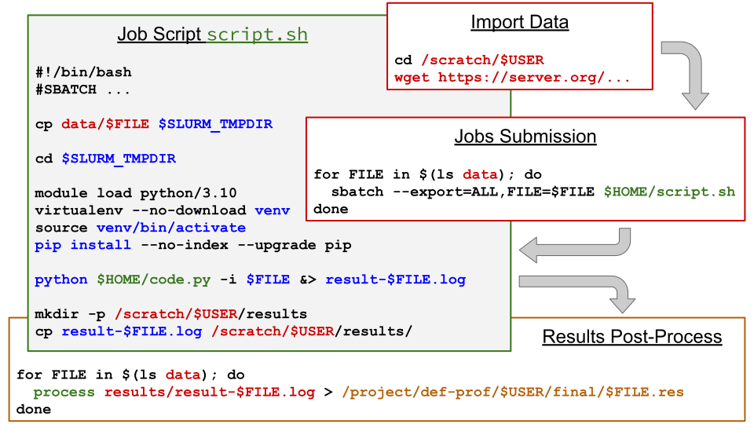

Storage Spaces#
There are different types of storage spaces on national clusters:
Personal (
/home)Temporary local (
$SLURM_TMPDIR)Temporary network (
/scratch)Shared project (
/project)Nearline - for long term storage (
/nearline)
Your data have the following attributes:
Size: small, large, very large files
Count: few files or a lot of files
Transferable: grouped and/or compressed data
Life cycle: in a job, between jobs, from one project to the next, to be archived
Access levels: confidential, shared, published
The goal of this chapter is to overview the basics of active data management on the available storage spaces on compute clusters.
Different Types of Storage#
The following table shows which types of storage space are accessible from login nodes and from compute nodes (CPU or GPU):
Available Space |
Login Nodes |
Compute Nodes |
|---|---|---|
|
Yes |
Yes |
|
No |
Yes |
|
Yes |
Yes |
|
Yes |
Yes |
|
Yes |
No |
About the different types of storage.
$HOME - Your Personal Space#
cd # $HOME by default
ls -a
ls -la
ls -ld $HOME
Entry point by default when you connect to a compute cluster
Relatively small quota limit, but accepts a relatively large number of files
$SLURM_TMPDIR - Temporary Local Space#
ls -ld $SLURM_TMPDIR
salloc # From login1
ls -ld $SLURM_TMPDIR
df -h $SLURM_TMPDIR
exit
Very fast local storage, but limited in size and to the duration of the compute job
Low latency compared to Lustre (the network filesystem)
Great bandwidth, even for small files
Data deleted at the end of the compute job
If multiple nodes are reserved for a single parallel job, each node has its own directory
$SLURM_TMPDIR
Use cases:
Importing multiple small files which will be used repeatedly during the calculation
Saving files which will be constantly modified - these files will have to be copied to
/projector/scratchbefore the end of the job
$SCRATCH - Temporary Network Space#
df -h /scratch
ls -ld $SCRATCH
Network storage space of great capacity for temporary data
Not backed up
Monthly purge for the data older than 60 days
Variable performance according to the use by all users
Use cases:
Using a dataset for only a few days
Storing results temporarily if made of hundreds of files
Storing intermediate results which would be too big for
/project
/nearline - Long Term Storage#
Storage interface on disk:
We can see the files with the
lscommandThe oldest data in
/nearlineis most likely moved to tapeThere are command lines to check the status of your files in
/nearline
To considerate:
The migration of the data to tape reduces the space used on disk, which saves some money when buying the storage system
Each read operation of a migrated file to tape will create a blocking request which causes a response time of a few minutes to hours (when the tape system is overloaded of requests)
That is why it is necessary to save a small number of large files
To avoid: copying numerous small files on Nearline before grouping them in archive files
Use cases:
Grouping files from
/projector/scratchStoring important data that will not be used for months
Storage Management#
Life Cycle of Active Data#
As time passes, the data tend to accumulate. It eventually becomes necessary to monitor the used space, as well as the number of files.
du -s ~
find . | wc -l
df -h /project
df -hi /project
The
diskusage_reportcommand generates a short report of the space used and the number of files inside each storage space you have access toEvery day, a per-user storage usage report is created in
/project:On Béluga: in
/project/.stats/<allocation-name>On Cedar and Narval: in
/project/.stats/<allocation-name>.jsonThe
diskusage_explorercommand shows a storage space usage summary and allows to navigate to sub-directories for further analysisDetailed information is available on demand for Graham and Niagara
Having a good active data management plan makes it easier to delete or archive specific files in the long term.
Example of the Life Cycle of Active Data#

Description of each step:
A dataset is downloaded in
/scratchTo be used between a few days and a few weeks
No need to backup the data (it is easily recoverable)
Submission of multiple compute jobs
One job per file in
datain the/scratchpartition
The job script is located in the
/homepartitionIt uses variables
$FICand$SLURM_TMPDIRto copy the data file to process locally on the compute nodeMove the session to the local directory
Configure a Python environment
Execute the Python code saved in
/home, provide the name of the file to process and redirect the output to a local fileCopy the results file to a directory in
/scratch
Post-process - process all results files and keep only the necessary information in
/project
Exercise - Running a Small Pipeline#
Check the code of these scripts:
scripts/blastn-pipeline.shscripts/blastn-postprocess.sh
Run the pipeline with the following command:
bash scripts/blastn-pipeline.sh
Monitor both jobs with
squeue -u $USERFind created files in:
$SCRATCH/dataand$SCRATCH/data/res_prll
Run the post-processing with the following command:
bash scripts/blastn-postprocess.sh
Find the TSV file in the project space
In Case of Inaccessible Data#
A professor can request the deletion of the inaccessible data
To get access to the data, we need the consent of the user that has blocked the access (most of the time not on purpose)
In case of no response, the research group’s institution policy can allow or not the access to the data
In all cases, it is better to plan the data management in advance, even when importing data on compute clusters.
Key Points#
The Lustre file system is optimized for large files (+10 MB)
Avoid saving too many files and directories in a directory (maximum 1000 items)
For data transfers and the use of Nearline, it is better to group data in archive files (like Zip, DAR, etc.)
In the project space, the group must plan who should access to what and when
To optimize jobs, use the
$SLURM_TMPDIRThe
diskusage_reportcommand returns an overview of used spaceFor critical data and codes:
have a copy elsewhere, and
use a version control system